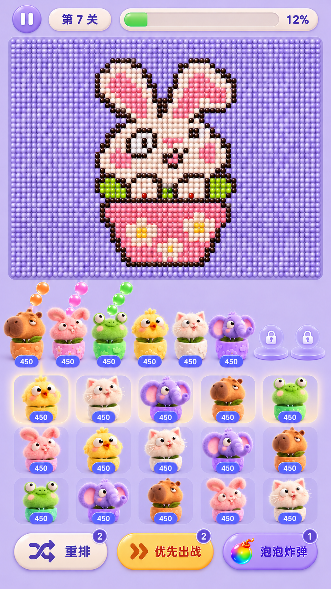
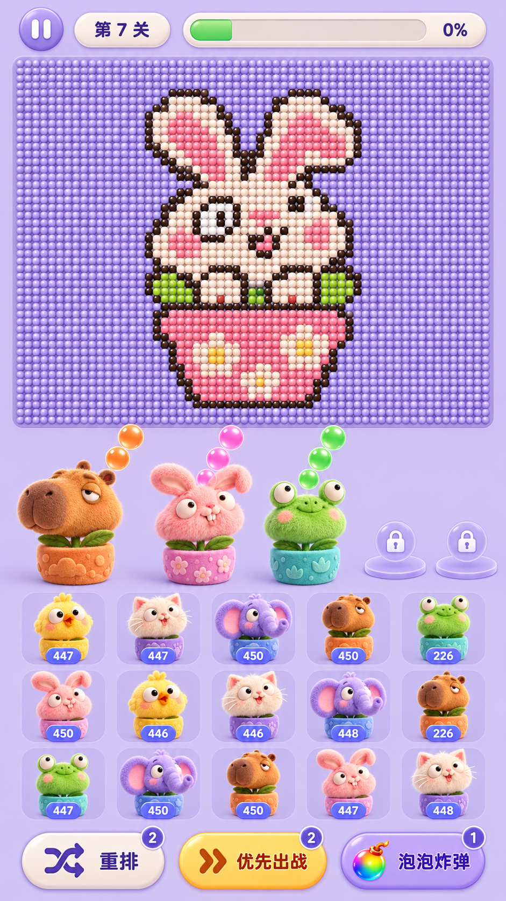

本轮完成布局与质感、22 色角色对应方案和完整战斗页效果图。整体比例与角色风格已确认，素材清单已完成。点击图片可查看原尺寸。


效果图用于视觉确认，并非游戏运行截图；兔子珠子图案、12% 进度和 450 弹量是构图示例。 主稿按现有典型关卡展示 6 个开放位 + 2 个锁位；实际数量仍由关卡和当前状态驱动。
01 / 材质与视觉层级
毛绒角色
严格参照用户原图的毛绒玩具质感：细密短绒、蓬松脸颊和轮廓、柔软耳朵、夸张眼神；柔和左上光照出绒毛方向与层次，缩到队列尺寸仍显得柔软蓬松。
圆润软陶或毛毡质感的小花盆，浅浮雕花朵或爪印；统一脚底线和透视。
珠子棋盘
紧密排列的亮面圆珠与细圆角托盘边缘；图案轮廓清晰，珠子不使用毛绒材质。
兔子图案沿用参考图的题材，用来确认密度与观感；不代表本轮已替换关卡内容。
柔和界面
奶油色与淡紫色胶囊、深紫圆体文字；主操作用暖黄色，数字独立清晰。
珠子图案优先，其次角色表情，最后按钮；卡槽、阴影与装饰维持低对比。
#D2C3F1#E8DDF8#FFF3E8#432575#A67BEE#FFD45B#6555E8毛绒质感是核心验收条件
以原始参考图为标准，保留细密绒毛、蓬松轮廓和柔软耳朵。出战角色与队列小图都应有可见的毛流和填充体积。
- 脸颊、额头、耳朵和口鼻能看出细密纤维及柔和毛流，不只靠整体柔光。
- 轮廓有自然细绒，脸与耳朵有填充玩具的蓬松体积。
- 小卡片中同时保留大块柔软毛流和细绒层次，缩小后仍能辨认是毛绒玩具。
- 参考图的毛长与密度为基准，避免过度加长毛、尖刺毛和杂乱噪点。
- 眼睛保留玩具眼的光泽，鼻子和嘴部保留缝制或织物细节。
- 角色身体呈毛绒质感，珠子、按钮和锁位沿用光滑材质。
后续接入时须在实际手机显示尺寸检查图集缩小、压缩和动画变形后的毛绒感；本轮尚未进行运行时验收。
02 / 页面比例与适配
顶栏
x 14 / y 8 / 512 × 46暂停、关卡牌、进度条。进度填充与百分比一致，文字与圆角不拉伸。
珠子棋盘
x 14 / y 60 / 512 × 396主视觉，保留密集珠子轮廓。边框薄而安静，不能遮挡最外圈珠子。
出战区
x 14 / y 464 / 512 × 138主稿展示 8 槽：6 名出战角色 + 2 个锁位；首批重点确定水豚、兔子、青蛙。
排队区
x 14 / y 612 / 512 × 246主稿展示 5 列 × 3 排；逐个浅色卡片，前排可点提示稍亮，后排保持正常待机。
道具栏
x 14 / y 876 / 512 × 66重排、优先出战、泡泡炸弹；数量角标独立。底部预留安全边距。
设计基准 540 × 960。以下为新方案的目标设计坐标，不是已经改入游戏的坐标；生成图按此比例表达，精确像素在接入阶段校准。
- 8 槽参考当前中心分布 x = 42 + 456 × i / 7；不能为了放大角色省略真实槽位。
- 8 槽时角色建议约 52–58 逻辑像素宽；队列单卡约 96×76，头像与数字不互相遮挡。具体以实机清晰度校准。
- 实际槽位、队列列数仍由关卡驱动。长屏优先增加区域间留白与棋盘显示空间，角色、文字、圆角等比保形；窄屏检查耳朵与两侧角色。
查看与现有游戏结构的衔接说明
现有棋盘显示区域为 y=114–572，新稿改变了视觉分区。接入时需同步处理珠子、弹体、防线、瞄准与点击坐标的显示映射，保持战斗数值与判定一致；本阶段仅记录依赖。
复活流程可能额外增加槽位，因此 8 槽是本稿展示状态，不是全局硬上限。队列背后的成员不会因为改成独立卡片而改变原有选择顺序。
03 / 角色与颜色
以水豚、兔子、青蛙作为第一批重点；小鸡、猫、大象沿用参考图的造型方向，蓝色小熊与狐狸补充其他色系。共 8 种动物母型覆盖 22 个现有颜色条目。
- 原有 22 个游戏色值与颜色判定保持对应；场景配色不替代游戏色表。
- 花盆正面主色是第一识别信号，弹体使用相同游戏色；毛发以同色系表达质感。
- 动物造型是第二识别信号；白猫配白色盆，青蛙配对应绿色盆。
- 近似色族预留可辨的盆面纹样差异，例如花、叶、爪印；具体纹样在角色定稿时确定，不能只靠细微色差。
- 同角色在出战区、队列和图鉴中保持同一身份、配色和透视。
- 神秘队员在揭晓前保留隐藏颜色语义，不用彩色毛发或花盆提前泄露。
- 22 色表是覆盖规划，本次没有为每种颜色批量出角色或拆出单独素材。
22 色角色对应草案
| 编号 | 游戏原色 | 角色方向 | 花盆主色 | 现有称呼 |
|---|---|---|---|---|
| 01 | #2982F4 | 蓝色小熊 | 蓝色盆 | 小蓝 |
| 02 | #42A9FF | 浅蓝小熊 | 浅蓝盆 | 小蓝 |
| 03 | #FF7E27 | 橙色水豚 | 橙色盆 | 小橙 |
| 04 | #FF9D30 | 金橙水豚 | 金橙盆 | 小橙 |
| 05 | #62E18E | 草绿青蛙 | 草绿盆 | 小绿 |
| 06 | #BD80FF | 淡紫大象 | 淡紫盆 | 小紫 |
| 07 | #FFDF48 | 黄色小鸡 | 黄色盆 | 小黄 |
| 08 | #FFFFFF | 奶白猫 | 奶白盆 | 小白 |
| 09 | #FF525B | 珊瑚红狐狸 | 珊瑚红盆 | 小红 |
| 10 | #2D2D2D | 炭黑猫 | 炭黑盆 | 小黑 |
| 11 | #696CAF | 靛蓝小熊 | 靛蓝盆 | 小靛 |
| 12 | #46D9FF | 冰蓝小熊 | 冰蓝盆 | 小冰 |
| 13 | #C8C5FF | 雾紫大象 | 雾紫盆 | 小雾 |
| 14 | #9C225E | 莓红兔子 | 莓红盆 | 小玫 |
| 15 | #65392D | 棕色水豚 | 棕色盆 | 小棕 |
| 16 | #B672FD | 紫罗兰大象 | 紫罗兰盆 | 小晶 |
| 17 | #92EF4D | 黄绿青蛙 | 黄绿盆 | 小荧 |
| 18 | #30D183 | 薄荷绿青蛙 | 薄荷绿盆 | 小碧 |
| 19 | #0C7E1C | 深绿青蛙 | 深绿盆 | 小翠 |
| 20 | #FFC5E0 | 粉色兔子 | 粉色盆 | 小粉 |
| 21 | #FFCAA9 | 蜜桃兔子 | 蜜桃盆 | 小霞 |
| 22 | #C5FFE4 | 浅薄荷青蛙 | 浅薄荷盆 | 小清 |
已确认的三个方向
淡紫背景、奶油 UI、亮面珠子与毛绒角色的整体组合是否符合期待。
8 槽真实密度下的角色大小与棋盘、队列的比例是否合适。
同色花盆与弹体的识别方式，以及 8 种动物母型覆盖 22 色的方向是否接受。
用户已确认此版。素材清单已整理完成；正式素材制作与游戏接入尚未执行。